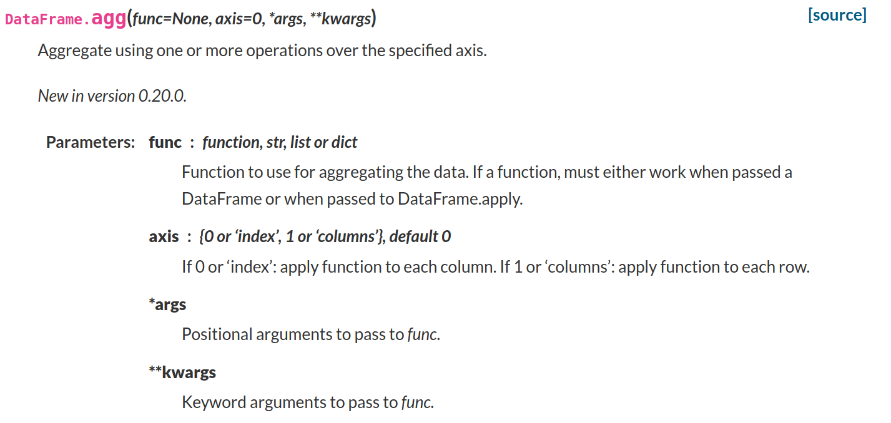
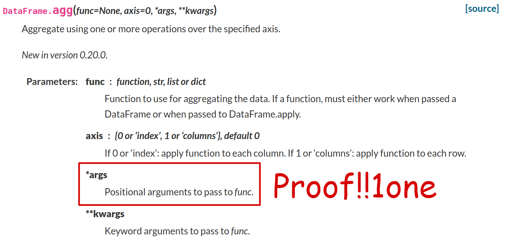
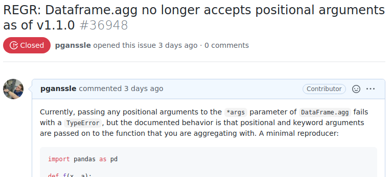
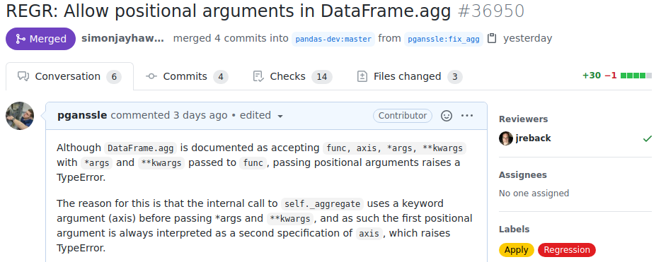
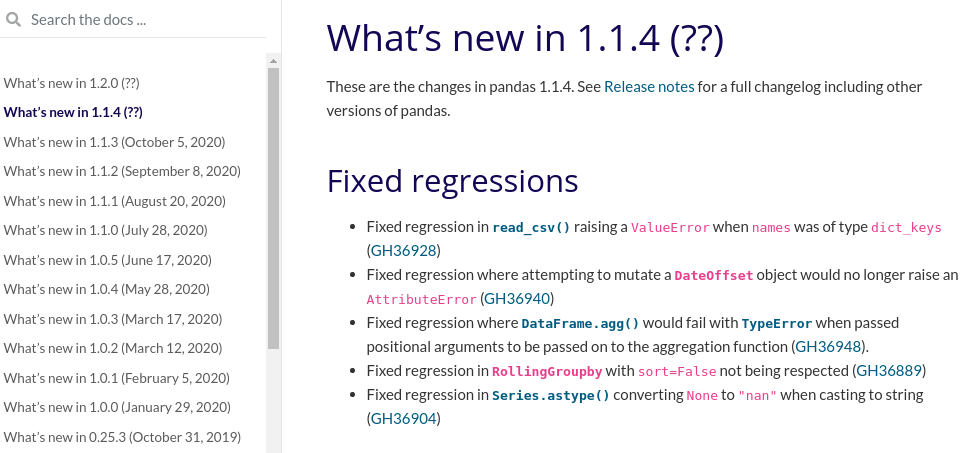
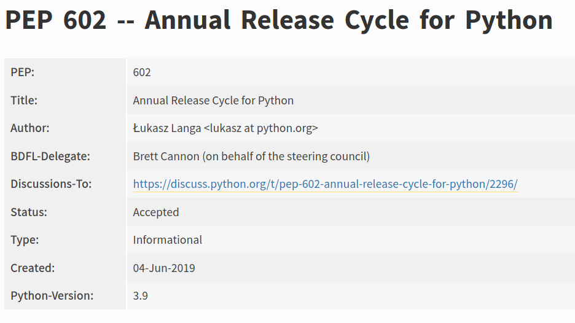
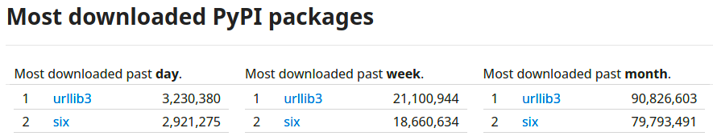

<h1 style="font-size: 3em">What to Do When the Bug is in Someone Else's Code</h1> <br/> <br/> <br/> <span style="font-size: 2.5em"> Paul Ganssle </span> <br/> <br/> <img src="images/pganssle-logos.svg" height="40px" alt="@pganssle"> <br/> <br/> <span style="font-size: 1em;"><em>This talk on Github: <a href="https://github.com/pganssle-talks/pycon-us-2022-upstream-bugs">pganssle-talks/pycon-us-2022-upstream-bugs</a></em> </span><br/> <a rel="license" href="https://creativecommons.org/publicdomain/zero/1.0/"> <img src="external-images/logos/cc-zero.svg" height="45px"> </a> <br/> Notes: My name is Paul Ganssle, I'm a software engineer at Google and also a contributor to many open source projects. Among other things, I'm a core developer of Python and a maintainer of dateutil and setuptools. As someone who primarily develops libraries, I'm obviously a fan of shared code, but I also recognize that there are risks to taking on dependencies, third party or not. One of those risks is the topic of today's talk: when something you depend on has a bug or any other incompatibility, it's not as easy to fix as it would be to fix a bug in your own code. T: 1m -- <h1><span class="emoji">⚠️</span> Warning <span class="emoji">⚠️</span></h1> <br/> Notes: Before we get started, though, I want to give you a warning. This talk deals with a number of strategies for handling bugs in your dependencies, but it's organized as a series of strategic retreats away from what I would consider the "right thing to do". While I've used each of these strategies in the past, they're mostly a collection of "least bad" options, and each strategy is worse than the last. We will of course start with the right tool for the job, but it'll get increasingly hacky and dangerous as we move on. S: 30s T: 1:30
## A Bug in Someone Else's Code ```python import pandas as pd def f(x, a): return x.sum() + a df = pd.DataFrame([1, 2]) print(df.agg(f, 0, 3)) ``` <span class="fragment" data-fragment-index="0"> Running this fails with <tt>pandas == 1.1.3</tt>: </span> ```bash $ python pandas_example.py Traceback (most recent call last): File ".../pandas/core/frame.py", line 7362, in aggregate result, how = self._aggregate(func, axis=axis, *args, **kwargs) TypeError: _aggregate() got multiple values for argument 'axis' The above exception was the direct cause of the following exception: Traceback (most recent call last): File "pandas_example.py", line 8, in <module> print(df.agg(f, 0, 3)) # Raises TypeError File ".../pandas/core/frame.py", line 7368, in aggregate raise exc from err TypeError: DataFrame constructor called with incompatible data and dtype: _aggregate() got multiple values for argument 'axis' ``` <!-- .element class="fragment" data-fragment-index="0" --> Notes: So, what do we mean by a bug in someone else's code? Here's an example that I recently encountered at work. In this minimal code, we're expecting to aggregate the DataFrame `df` with the function f. The `.agg` function itself takes two arguments: the function to apply and the axis to apply it on, and then all other positional and keyword arguments are passed along to the function. So the idea is that this will go row by row in our dataframe and call the function, passing it a row and the value 3. In the latest version of pandas, though, it raises an exception and complains about the `axis` parameter being passed twice. That's strange. Let's check the documentation and make sure we're using it right. S: 1m 30s T: 3:00 -- ## A Bug in someone else's code   Notes: Ah, yes, looks like we are! Proof! This is not my bug, this is a bug in pandas, because, by their very own admission say that you can pass additional positional arguments to this function. S: 30s T: 3:30 -- ## The Right Thing To Do™ - File an issue upstream<br/> - Submit a patch to fix the issue upstream <!-- .element class="fragment" data-fragment-index="1" --> - Wait for release <!-- .element class="fragment" data-fragment-index="2" --> - Update your version <!-- .element class="fragment" data-fragment-index="3" -->    Notes: What should we do now? Well, we should do the right thing, we should at least start with the right thing. First we file an issue containing our minimal reproducer and the expected results. You can also submit a patch to fix the issue upstream. In this case it was pretty straightforward so I submitted a PR and within a day or so it was actually merged. So far this is looking like an open source success story. Then we just have to wait for a pandas release that includes the fix and update my version and the problem is solved! S: 45s T: 4:15 -- ## What can go wrong? - Production deadlines - Long upstream release cycles - Long deployment cycles in-house  Notes: So what could go wrong? Well, for one thing we could have production deadlines. Maybe this bugfix is critical and needs to be rolled out right away and we don't even have time for the patch to land. There's also the possibility of long upstream release cycles. I'll note that the release cycle for Python was just *shortened* to 1 year, from 18 months. If you are waiting on a new feature introduced in Python, you may not want to wait a year for it to roll out. And then there are also delays rolling out the changes in your production environment. Depending on how your production infrastructure is set up, it can take weeks or months to get new versions deployed. This is not at all uncommon in my experience; it can take a long time to do testing, QA and other release processes. So, if you have a problem and you need it fixed right away, what do you do? S: 1m T: 5:15
# One-off Workarounds ```python def f(x, a): return x.sum() + a df = pd.DataFrame([[1, 2], [3, 4]]) # Passing `a` by position doesn't work in pandas >=1.1.0,<1.1.4 # print(df.agg(f, 0, 3)) print(df.agg(f, 0, a=3)) ``` <br/> <br/> <h3 style="text-align: left">Reasonable if:</h3> - You only hit the bug in one place. - The workaround is very simple - You are indifferent between the bug-triggering and workaround code. Notes: The first step is to try to introduce a workaround. In this case, we can work around the bug pretty trivially here by passing the argument by keyword rather than position, so I add a little TODO comment indicating why I chose to write the code this way, and move on. This sort of thing works just fine when you only hit the bug in one place and the workaround is very simple. It's also very reasonable if you are indifferent between the version that triggers the code and the version that doesn't — in this case I don't have any particular preference for positional arguments, so it's not a big deal to switch this permanently. S: 1m15s T: 6:30 -- # Wrapper functions ```python def dataframe_agg(df, func, axis=0, *args, **kwargs): """Wrapper function for DataFrame.agg. Passing positional arguments to ``func`` via ``DataFrame.agg`` doesn't work in ``pandas >=1.1.0,<1.1.4``. This wrapper function fixes that bug in affected versions and works normally otherwise. """ if args: def func_with_bound_posargs(arg0, **kwargs): return func(arg0, *args, **kwargs) func = func_with_bound_posargs return df.agg(func, axis=axis, **kwargs) print(dataframe_agg(df, f, 1, 3)) ``` <br/> - Encapsulates complicated workaround logic. - Provides an easy target for later removal. Notes: If the workaround is a little complicated or you hit it a bunch of places, it may make sense to use a wrapper function. Going back to our pandas example, I've written a little wrapper function that just binds the positional arguments to the function before it's passed to the `agg` function, so that no positional arguments ever have to be passed through `agg`. I wrap that up in a function called `dataframe_agg` and then I can switch over all my afflicted call sites over to using the wrapper where the bug is fixed. This is nice because it encapsulates the workaround logic, and also because when it's time to actually fix the bug it's a fairly simple search and replace to restore the original code. S: 1m30s T: 8:00 -- # Wrapper functions: Opportunistic upgrading Notes: Of course, you can say that you'll eventually go remove all the hacks, but just in case, you can try to minimize the scope of your hack by building in an expiration; if possible, you can detect at runtime whether the hack is needed, and apply it if and only if you do! This is something I'm calling opportunistic upgrading, and it gets more and more useful as the fixes get more and more hacky. S: 30s T: 8:30 -- # Opportunistic upgrading <br/><br/> ```python def dataframe_agg(df, func, axis=0, *args, **kwargs): """Wrapper function for DataFrame.agg. Passing positional arguments to ``func`` via ``DataFrame.agg`` doesn't work in ``pandas >=1.1.0,<1.1.4``. This wrapper function fixes that bug in affected versions and works normally otherwise. """ if args and _has_pandas_bug(): def func_with_bound_posargs(arg0, **kwargs): return func(arg0, *args, **kwargs) func = func_with_bound_posargs return df.agg(func, axis, *args, **kwargs) ``` <br/> Hack is only triggered if you otherwise would have triggered the bug! Notes: The way it works is that you do something that detects whether or not the environment that is currently running is affected by the bug, and skip the workaround if you're not. So, looking back at our original wrapper function, we just have to add this `_has_pandas_bug()` function, and the hack is only executed if the bug otherwise would have been triggered! S: 45s T: 9:15 -- # Opportunistic upgrading <br/> ## By feature detection ```python import functools import pandas as pd @functools.lru_cache(1) # Need to execute this at most once def _has_pandas_bug(): def f(x, a): return 1 try: pd.DataFrame([1]).agg(f, 0, 1) except TypeError: return True return False ``` <br/> ## By version checking <!-- .element class="fragment" data-fragment-index="1" --> ```python import functools @functools.lru_cache(1) # Need to execute this at most once def _has_pandas_bug(): from importlib import metadata # Python 3.8+, backport at importlib_metadata from packaging import Version # PyPI package return Version("1.1.0") <= metadata.version("pandas") < Version("1.1.4") ``` <!-- .element class="fragment" data-fragment-index="1" --> Notes: Pros for feature detection: - Doesn't require knowledge of exactly which versions are affected. - Accurate version may not be available at runtime in all situations. - The bug may be simple to check for, but difficult to describe in terms of versions and platforms. Pros for version-based: - Works even when the bug is hard to detect, like if it's expensive to realize you've triggered the bug: e.g. a memory leak, or something that triggers a segfault. - Relatively simple to implement. S: 1m45s T: 11:00 -- # Opportunistic upgrading at import time <br/> ```python if _has_pandas_bug(): def dataframe_agg(df, func, axis=0, *args, **kwargs): """Wrapper function for DataFrame.agg. Passing positional arguments to ``func`` via ``DataFrame.agg`` doesn't work in ``pandas >=1.1.0,<1.1.4``. This wrapper function fixes that bug in affected versions and works normally otherwise. """ if args: def func_with_bound_posargs(arg0, **kwargs): return func(arg0, *args, **kwargs) func = func_with_bound_posargs return df.agg(func, axis=axis, **kwargs) else: dataframe_agg = pd.DataFrame.agg print(dataframe_agg(df, f, 1, 3)) ``` Notes: You can also take this one step further and resolve whether or not you need a wrapper method at all at import time by defining the function conditionally. This can save you some overhead and really minimize the scope of your function, and I would tend to do it any time that checking for the existence of the bug is cheap and when it is ergonomic to do so. S: 1m T: 12:00 -- # Real-life Examples 1. `six`: Pretty much all wrapper functions to write code that works with Python 2 and 3.  2. [`pytz-deprecation-shim`](https://pytz-deprecation-shim.readthedocs.io/en/latest/) - Wrapper classes that mimic `pytz`'s interface - Uses `zoneinfo` and `dateutil` under the hood - No `pytz` dependency! - For helping to migrate off `pytz`. <br/> <br/> 3. Feature backports - `importlib_resources` - Most things in the `backports` namespace. Notes: Only mention `six`, leave the other two as bonus content. S: 30s T: 12:30
# Monkey Patching Notes: So, let's get into the next strategy, and this is where we start getting into properly dangerous and hacky territory. This strategy is Monkey Patching. S: 10s T: 12:40 -- # Intro to Monkey Patching ```python import random flabs = __builtin__.abs # Store the original method def six_pack(x): """Nothing is truly absolute. Embrace ambiguity.""" abs_value = flabs(x) if random.random() < 0.8: return abs_value else: return -abs_value __builtin__.abs = six_pack # Use our new method instead of `abs()` print([abs(3) for _ in range(10)]) # [3, 3, 3, 3, -3, -3, 3, -3, -3, 3] ``` <br/> <br/> Affects anyone using the namespace: ```python >>> from fractions import Fraction >>> set(map(hash, [Fraction(110, 3) for _ in range(100)])) {768614336404564687, 1537228672809129264} ``` Notes: So what is monkey patching? The idea behind monkey patching is that most modules and classes in Python are mutable and live in a global namespace, so you can actually just dynamically modify code that you want to patch at runtime. Here's an example where we decide that the `abs` function is a bit stodgy, and so we're going to make it embrace chaos by making it return a negative number 20% of the time. We accomplish this by defining our own version of `abs` and then assigning dunder-builtins dot abs to the function we want to patch in, at which point calling `abs` sometimes returns negative numbers. This works locally but also globally for anyone using the namespace or module we've patched. Evidently the `hash` function of the `Fraction` class uses `abs` somewhere, so you can see that it's being affected by our patched `abs` function. S: 1m10s T: 13:50 -- # How does this help us? <br/> ```python from functools import wraps import pandas as pd if _has_pandas_bug(): _df_agg = pd.DataFrame.agg @wraps(pd.DataFrame.agg) def dataframe_agg(df, func, axis=0, *args, **kwargs): if args: def bound_func(x, **kwargs): return func(x, *args, **kwargs) func = bound_func return _df_agg(df, func, axis=axis, **kwargs) pd.DataFrame.agg = dataframe_agg ``` <br/> <br/> - Fixes the issue globally and transparently. - May fix the issue in *other* code you don't control. <br/> Notes: So, how does this help us? Obviously it's cool that we can break the hash of fraction objects, but how does that help us fix bugs? Well, looking back at our `pandas` example, we could implement our wrapper instead like this — detect that we are affected by the bug, and if so modify `DataFrame` so that the `agg` method calls our function, rather than changing all the call sites. This also can fix the issue globally and transparently. Rather than having to change all the code in your application to use wrapper functions, you can just directly fix the method that's causing you problems, and then remove the monkey patch when the bug is fixed. This will also fix the bug for everyone in your current runtime as well, including other code you don't control. S: 1m T: 14:50 -- # Why is this a terrible idea? - Action at a distance. - No one else is expecting you to do this. - Often tightly coupled to implementation details. Notes: S: 1m T: 15:50 -- # Scoping the patch correctly ```python # Contents of pimodule.py import math def pi_over_2() -> float: return math.pi / 2 ``` <br/> ```python # Contents of pimodule2.py from math import pi def pi_over_2() -> float: return pi / 2 ``` <br/> ```python import math import pimodule import pimodule2 math.pi = 3 # Pi value is too high imo print(pimodule.pi_over_2()) # 1.5 print(pimodule2.pi_over_2()) # 1.5707963267948966 ``` <!-- .element class="disappearing-fragment fade-out fragment" data-fragment-index="0" --> ```python import math import pimodule import pimodule2 math.pi = 3 # Pi value is too high imo pimodule2.pi = 3 print(pimodule.pi_over_2()) # 1.5 print(pimodule2.pi_over_2()) # 1.5 ``` <!-- .element class="nospace-fragment fade-in fragment" data-fragment-index="0" --> Mind your namespaces! Notes: S: 1m40s T: 17:30 -- # Scope as tightly as possible <!-- .slide: class="not-centered" --> <br/> If you only need the patch to apply to your code, use a context manager: ```python from contextlib import contextmanager @contextlib.contextmanager def bugfix_patch(): if _needs_patch(): # Don't forget opportunistic upgrades! _do_monkey_patch() yield _undo_monkey_patch() else: yield # Use as a context manager def f(): unaffected_code() with bugfix_patch(): affected_code() # Or as a decorator @bugfix_patch def affected_function(): ... ``` Notes: One tool that might can be useful for keeping the scope of your patches tight is that if you only want them applied while your specific code is running, you can use `contextlib.contextmanager` to easily create a context manager. You write a little function that applies and then removes the monkey patch, then decorate it with `contextlib.contextmanager` and the function will return an object that can either be used as a context manager or a decorator. S: 30s T: 18:00 -- # Real-life examples - `setuptools` extensively patches `distutils` on import ```python def patch_all(): # we can't patch distutils.cmd, alas distutils.core.Command = setuptools.Command has_issue_12885 = sys.version_info <= (3, 5, 3) if has_issue_12885: # fix findall bug in distutils (http://bugs.python.org/issue12885) distutils.filelist.findall = setuptools.findall needs_warehouse = ( sys.version_info < (2, 7, 13) or (3, 4) < sys.version_info < (3, 4, 6) or (3, 5) < sys.version_info <= (3, 5, 3) ) if needs_warehouse: warehouse = 'https://upload.pypi.org/legacy/' distutils.config.PyPIRCCommand.DEFAULT_REPOSITORY = warehouse ... ``` - ...and `pip` invokes the monkey patch even if you don't import `setuptools`! <br/> <br/> _**Take Heed:** This was expedient at the time, but `setuptools` has been working to unravel this for years._ Notes: S: 1m T: 19:00
# Vendoring What is vendoring? <!-- .element: class="not-centered" style="width: 95%; font-weight: bold" --> <div style="height: 600px" data-fragment-index="0" class="disappearing-fragment fade-out"/> ``` $ tree setuptools/_vendor/ setuptools/_vendor/ ├── __init__.py ├── ordered_set.py ├── packaging │ ├── __about__.py │ ├── _compat.py │ ├── __init__.py │ ├── markers.py │ ├── py.typed │ ├── requirements.py │ ├── specifiers.py │ ├── _structures.py │ ├── tags.py │ ├── _typing.py │ ├── utils.py │ └── version.py ├── pyparsing.py └── vendored.txt 1 directory, 16 files ``` <!-- .element class="fragment nospace-fragment" data-fragment-index="2" --> <span class="fragment nospace-fragment" data-fragment-index="2"> <b>vendoring</b>, <em>n.</em>, including a copy of one or more dependencies in a project's source code. </span> Notes: Webster's dictionary defines vendoring as, "The word you have entered isn't in the dictionary", but that's because the fat cats at the dictionary don't _want_ you to know that vendoring is actually the practice of including your dependencies directly in your project's source tree. S: 30s T: 19:30 -- # How to vendor a package <br/> 1. Copy the source code into your project tree somewhere (e.g. under `myproject._vendored`). 2. Update references: `squalene` → `myproject._vendored.squalene` 3. Apply any patches to your local copy. <!-- .element class="fragment" data-fragment-index="0" --> <br/> ## Advantages <!-- .element class="fragment" data-fragment-index="1" --> <br/> - No chance that your hack will break if the dependency is upgraded.<!-- .element class="fragment" data-fragment-index="1" --> - Scoped to your package only — no modifying of globals.<!-- .element class="fragment" data-fragment-index="1" --> - Allows two packages to use otherwise incompatible versions of a shared dependency.<!-- .element class="fragment" data-fragment-index="1" --> Notes: The way it works is that you copy the source code into your source code directory somewhere, usually under a submodule called `_vendored` or something like that, then you change all the references to the package in your code to refer to the version of the dependency that lives in your project. So if you vendor a package called `squalene`, you would change all your import statements to import `myproject._vendored.squalene` instead. If you are vendoring a copy for the purposes of making local fixes rather than just vendoring an upcoming version of the code with your fixes in it, you then would apply whatever patches you need to your local copy. The advantages of this are that it's fairly self-contained. Your dependency version is pinned and won't break out from under you, and the fixes are scoped to your package only. This is also useful for breaking dependency resolution deadlocks — if you need version 2 of a package and another of your dependencies needs version 1, you can vendor version 2 while you wait for your dependency to be made compatible with the latest version. S: 1m45s T: 21:15 -- <!-- .slide: class="not-centered" --> # Cautions ```python >>> import squalene >>> from my project._vendored import squalene as vendored_squalene >>> squalene.magnitude.Magnitude(1) < squalene.magnitude.Magnitude(2) True >>> vendored_squalene.magnitude.Magnitude(1) < vendored_squalene.magnitude.Magnitude(2) True >>> squalene.magnitude.Magnitude(1) < vendored_squalene.magnitude.Magnitude(2) ... TypeError: '<' not supported between instances of 'squalene.magnitude.Magnitude' and 'myproject._vendored.squalene.magnitude.Magnitude' >>> squalene.magnitude.Magnitude is myproject._vendored.squalene.magnitude.Magnitude False ``` <br/> Reference to the package's top-level name within the vendored package will still hit the global package: ```python # Contents of _vendored/squalene/world_destroyer.py from .magnitude import WORLD_DESTROYING_MAGNITUDE from squalene.magnitude import Magnitude def destroy_world(world, start_magnitude=None): magnitude = start_magnitude or Magnitude(3) while magnitude < WORLD_DESTROYING_MAGNITUDE: magnitude.increase(1) ``` <br/> Solving this may require one of: - Extensive modifications to the source. - Import hooks. - Messing around with `sys.path`. Notes: There are two very common issues that arise with vendoring that are worth keeping in mind, and they are closely related. The first is that when there are two or more copies of the vendored module in your application, you will start to see incompatibilities arise that you might not have expected. For example, most classes only define comparisons between instances of the same class, but since the vendored version of the module re-defines all the classes in the package, the instances provided by the vendored version cannot be compared to instances of the class from the global version. This comes up in the context of the second problem, which is that references to the package's top level name within the vendored package still hit the global package, but relative references hit the vendored version. So in this example, we have a function that uses mixed references to a vendored class and to the equivalent class in the globally installed module. In order to solve the immediate compatibility problem, you either have to make extensive modifications to the vendored copy to update all its references or you have to use some dark wizardry to get the namespaces to resolve correctly. S: 1m30s T: 22:45 -- # Downsides - Hard to implement. - Hard to maintain. - Has a tendency to be leaky in one way or another (import system wasn't really built with this in mind). - Doesn't work well for any dependency that is part of the public API. Notes: So obviously we're already seeing some downsides here. It's hard to implement and it can be hard to maintain, not least of which because it complicates your build and packaging. It also has a tendency to be leaky in one way or another, since the import system wasn't really designed to support multiple versions of a package in the same runtime. And, as you can imagine from the problems of cross-version comparisons, this doesn't work well for any dependency that is exposed in your public API. You can't be returning references to your own vendored version of a package if other people are going to be making use of it. S: 45s T: 23:30 -- # Real-life examples - This talk! - `reveal.js` and `jekyll-revealjs` are vendored into the source. <span class="disappearing-fragment fragment fade-out" data-fragment-index="0"><br/><br/></span> - <!-- .element class="nospace-fragment fragment" data-fragment-index="0" --> <tt>jekyll-reveal</tt> even carries a patch! <span class="emoji">🤦</span><br/><br/> - `pip` and `setuptools` vendor all their dependencies to avoid bootstrapping issues. - Both have a "no patches in tree" policy. - Manipulates namespace resolution to get name resolution to work.<br/><br/> - `invoke` vendors all its dependencies (including separate Python 2 and 3 trees for `pyyaml`) - No dependencies have been updated in >= 4 years <span class="emoji">☹</span> Notes: This talk's repo carries at least one patch in `jekyll-revealjs` that I haven't had time to try and upstream. I have also removed some patches that were accepted upstream. `pip` and `setuptools` both have policies that fixes must be done upstream, but `pip` does do things like only partially vendor `setuptools`. Both use spooky namespace manipulation to get the name resolution to work — and their solutions are not compatible with one another! S: 45s T: 24:15
# Maintaining a Fork Notes: The last option should be deploying and maintaining a patched version of the library in your production distribution. The difference with vendoring is that this is global; rather than using an unmodified version of the upstream, you put your patched version into your production pipeline. Whether that's some linux-like distribution system, a monorepo, your own mirror of PyPI, etc. Unfortunately, in my experience, people often take this as their _first_ option, because just patching your local version is relatively easy to do, and the cost only comes later. S: 1m T: 25:15 -- # Accomplishing this: distros / monorepos - Mostly accomplished with `.patch` files. - These can be managed by `quilt`, see: https://raphaelhertzog.com/go/quilt <br/> ```diff From f9c06582c58e01deab10c6fcc081d4d7cb0f1507 Mon Sep 17 00:00:00 2001 From: Barry Warsaw <barry@python.org> Date: Fri, 18 Nov 2016 17:07:47 -0500 Subject: Set --disable-pip-version-check=True by default. Patch-Name: disable-pip-version-check.patch --- pip/cmdoptions.py | 2 +- 1 file changed, 1 insertion(+), 1 deletion(-) diff --git a/pip/cmdoptions.py b/pip/cmdoptions.py index f71488c..f75c093 100644 --- a/pip/cmdoptions.py +++ b/pip/cmdoptions.py @@ -525,7 +525,7 @@ disable_pip_version_check = partial( "--disable-pip-version-check", dest="disable_pip_version_check", action="store_true", - default=False, + default=True, help="Don't periodically check PyPI to determine whether a new version " "of pip is available for download. Implied with --no-index.") ``` <br/> <div class="fragment" data-fragment-index="0"> <ul><li>Can also accomplish this with <tt>sed</tt> or other scripts in simple cases:</li></ul> </div> ```bash # Excerpt from an Arch Linux PKGBUILD prepare() { cd $_pkgname-$pkgver sed -i 's|../../vendor/http-parser/http_parser.h|/usr/include/http_parser.h|' $_pkgname/parser/cparser.pxd } ``` <!-- .element class="fragment" data-fragment-index="0" --> Notes: So if you want to accomplish this, mostly I've seen this done using patch files, where you store the original code as a tarball and a series of diffs for how it needs to change. This way you have a clean record of everything you've changed, and to the extent that they still cleanly apply, you can also easily re-apply the changes when you upgrade to a new version. A lot of people use this software called `quilt` for generating and managing those patches. I don't really have time to go into it, but this link does a good job of explaining how it works and the basics of how to use it better than I could in 30 seconds anyway. In some simple cases — and obviously we want to keep our patches as simple as possible — you can even use something like `sed` to just do a search-and-replace at build time. This seems to be a fairly common idiom in Arch Linux packages, where they have a strong policy against extensive patching, and tend to have much simpler patches. S: 1m15s T: 26:30 -- # Downsides - You are maintaining a fork that upstream doesn't know about.<br/><br/> - Updating all your patches adds friction to the upgrade process.<br/><br/> - No guarantees of compatibility.<br/><br/> Notes: So with that we're back to talking about how this is a bad idea. While this is method is appealing because it's pretty easy to implement and there are tools available to help you do it, the big problems come when you have to carry these patches over a long period of time. You end up maintaining a fork that upstream doesn't know about, so they may move in another direction that is incompatible with your patch. Each patch adds some friction to your upgrade process, as you have to reconcile your changes with upstream, and you may find that other people in your organization have come to rely on changes you made that are incompatible with newer versions of the software. S: 1m T: 27:30 -- # Real-life Examples - Nearly every Linux distro, either heavily (e.g. Debian) or lightly (e.g. Arch).<br/><br/> - `conda` and `conda-forge` packages.<br/><br/> - Most big companies.<br/><br/> ## <!-- .element class="fragment" data-fragment-index="0" --> Success story <img src="images/attrs-zope.png" alt="A Github PR making zope a semi-optional test dependency for attrs" class="fragment" data-fragment-index="0" /> Notes: I hardly have to mention real life examples, because this sort of thing is pretty commonly done. Various organizations are more or less willing to maintain their own flavor of open source software, and it's very common to have something like this in big companies. At work I've been trying to keep `attrs` up-to-date, but it carried a few patches that were a bit annoying to fix every time. Nothing major, but I was able to get most of them removed except one where we disabled all `zope`-related tests because we don't use `zope` and packaging `zope` just to test that `attrs` works with `zope` would be ridiculous. I made a PR adding a mechanism for disabling `zope` directly in `attrs`'s test suite and to my surprise Hynek accepted it, so I was able to remove my last `attrs` patch! S: 1m30s T: 29:00
# Final Thoughts <br/> <span style="font-size: 0.5em; margin-top: 0px">This photo doesn't really match what I'm talking about, but I wanted to show off this rad picture of a Blue Jay I took.</span> Notes: Patience is a virtue. Each of these strategies involves incurring some technical debt, and some of them involve _imposing_ technical debt on your entire organization. Consider developing strategies to allow you to patiently wait for upstream fixes to deploy. In for a penny, in for a _penny_ — don't let these hacks grow beyond what's absolutely justified. These largely represent technical debt, so don't accrue too much of it, and pay it down as quickly as you can.